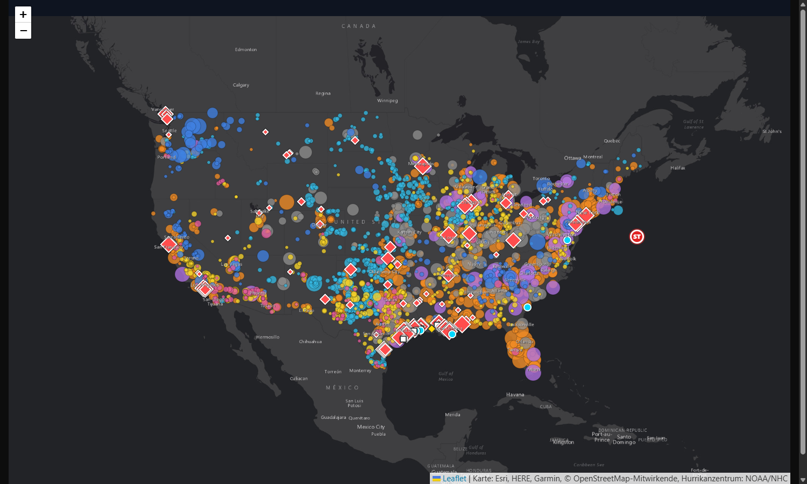

Umwelt und Klima sind für die Märkte vor allem über drei Wege wichtig: über die Preise für Energie, über die Politik, die Energie und Emissionen regelt, und über Wetter und Wasser als Risiko für Schäden und Ernten. Die Zahlen stammen von der Energiebehörde EIA, von NOAA und NASA, von der Federal Reserve (FRED), vom US Drought Monitor und von Cox Automotive.
| Baustein | Was er beschreibt | Auf dieser Seite |
|---|---|---|
| Strommix | Aus welchen Quellen der US-Strom kommt: Erdgas, Kohle, Atomkraft, Wind, Sonne, Wasser. | Kuchen unten |
| Energiepreise | Was Strom, Benzin, Heizöl, Erdgas und Rohöl kosten. Sie schlagen sich in Haushaltsbudgets und Inflation nieder. | Kachelgruppe Energiepreise |
| Klimapolitik | Gesetze, Verordnungen und Gerichtsurteile, die Emissionen und Energieförderung regeln. | Zeitleiste und Behörden |
| Elektroautos | Neuverkäufe, Marktanteil und Ladeinfrastruktur als Teil der Verkehrs- und Energiewende. | Kachelgruppe Elektroautos |
| Wasser und Dürre | Wie groß die Fläche mit Trockenheit ist. Das wirkt auf Landwirtschaft, Stromerzeugung und Preise. | Kachelgruppe Wasser und Dürre |
| Klimadaten und Extremwetter | CO₂-Konzentration, globale Temperatur und Schäden durch Naturkatastrophen. | Kachelgruppen Klimadaten und Extremwetter |
Förderung von Öl und Gas, LNG-Exporte und der Stromverbrauch der Sektoren stehen in Oberthema 4 (Wirtschaft und Infrastruktur).
Die Wirkung auf Märkte und Währungen wird hier bewusst nicht beschrieben. Sie folgt später in der Ableitung.

Karte öffnen · drei Ansichten Wo Energie erzeugt wird und wo das Wetter gerade liegt2.751 Kraftwerke nach Energiequelle, Raffinerien, Flüssiggas-Terminals, Ölreserve, dazu Wetterradar, Stürme und Warnungen live. Ansichten: Energie, Wetter und Hurrikane, beides zusammen.Förderung von Öl und Gas, LNG-Exporte und der Stromverbrauch der Sektoren stehen in Oberthema 4 (Wirtschaft und Infrastruktur). Wie die Preise auf die Inflation wirken, steht in Oberthema 6.
Die Pegel der großen Stauseen im Westen (zum Beispiel Lake Mead und Lake Powell) haben hier noch keine Kennzahl, weil keine zuverlässig automatisch abrufbare Quelle gefunden wurde. Sie werden nachgetragen, sobald eine geeignete Quelle feststeht.